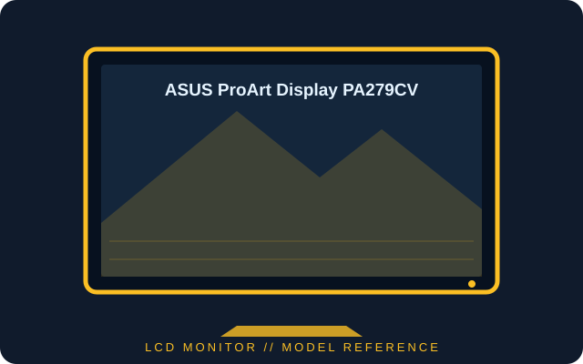

[ INDIVIDUAL COMPONENT // DISPLAYS ]
ASUS ProArt Display PA279CV
27-inch 4K IPS creator display with factory-calibrated color modes and 65 W USB-C power delivery.

IDENTIFICATION: Confirm the complete model and regional suffix on the rear label. Published figures describe the cited family/configuration; the exact manual and unit label take precedence where revisions differ.
Specifications
| Catalog subcategory | LCD displays |
|---|---|
| Exact product / family | ASUS ProArt Display PA279CV |
| Panel and native resolution | 27-inch IPS LCD, 3840 × 2160 (16:9) |
| Native timing | Up to 60 Hz at native resolution |
| Luminance / contrast | 350 cd/m² typical; 1000:1 typical |
| Inputs / companion ports | DisplayPort 1.2, HDMI 2.0 × 2, USB-C with DisplayPort Alt Mode and up to 65 W delivery, USB-A hub and audio out |
| Stand / VESA mounting | Height, tilt, swivel and pivot adjustments; 100 × 100 mm VESA mount |
Power and compatibility notes
Power consumption is approximately 32 W in typical operation (mode-dependent). USB-C video requires DisplayPort Alt Mode; 65 W charging may not meet high-performance laptop loads. See ASUS documentation for regional variants and supported timings.
Preservation notes
Record the complete rear-label model, serial/date code, supplied stand and accessories, tested input, host graphics output, cable, selected timing and image condition. Preserve the matching regional manual and calibration profile with the unit; use qualified service procedures for internal work.
Manufacturer documentation and sources
- ASUS — PA279CV technical specificationsManufacturer technical specifications for PA279CV.
- ASUS — PA279CV support and manualsOfficial model-specific manuals and documentation.